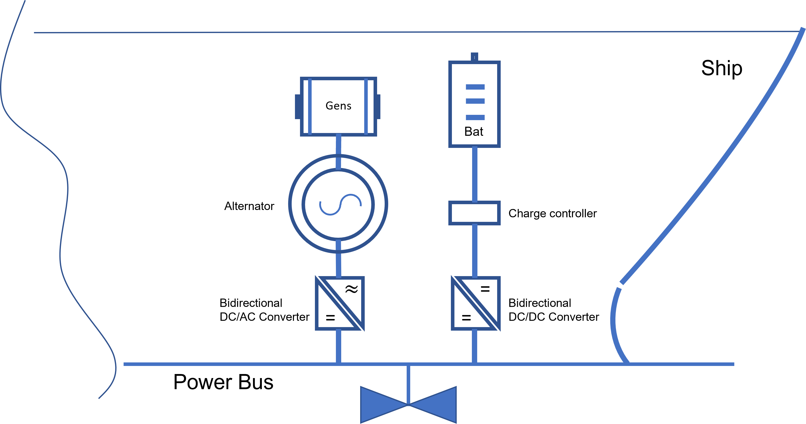

Project overview.¶
HEO Model - Genset(s) and Baterie(s)¶
The solution introduced in this project aims to utilize a genset optimally by integrating an energy storage in the form of set batteries to let ship genset run at optimal load over a predefined time horizon. The primary example is built around an offshore shipping example, but the general framework of the studied solution can be extrapolated to any specific setting where there are two or more energy sources.

Model synopsys¶
The model developed is of Mixed Integer Linear Programming (MILP) type. All functions (objective and constraints) are linear, and the variables can be continuous, integer or binary. Binary variables are used to model logical decisions in the problem (i.e. a generator is used = 1 or not used =o). The optimal solution to the MILP problem is found by solving a sequence of many LP problems (simpler problems that are solved very fast), where the number of LP problems to solve depends on the number of binary and integer variables (more variables give a larger combinatorial solution space). Nonlinear functions can in many cases be approximated with piecewise linear ones, meaning that the MILP approach is quite general. Regardless of state-of-the-art of MILP solvers on the market that are highly efficient and capable of solving even very "large" MILP problems.
Model optimization policy¶
The optimization model is done in discrete time, i.e. the time horizon is divided into smaller time steps and in each time step everything is kept constant. The objective is to minimize fuel consumption within the time horizon given through a pre-defined load schedule for each time step. Logical variables are introduced to facilitate the logic needed for operating the genset(s) and batterie(s). The model is a proof of concept and relatively easy to adjust and scale up for potential use cases.